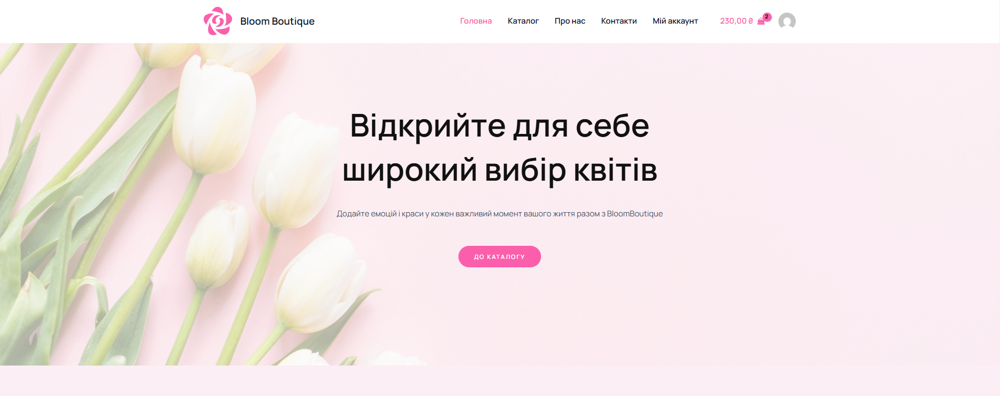

Опис роботи
Розробка веб-застосунку для інтернет-магазину квітів, який забезпечує зручність замовлення, швидке оформлення покупок та інтеграцію з платіжними системами.
Актуальність теми
Онлайн-торгівля квітами активно розвивається, що пояснюється зручністю для клієнтів та можливістю автоматизації бізнес-процесів.
Мета та завдання
Метою проєкту є створення зручного, швидкого та адаптивного веб-застосунку для продажу квітів.
Основні завдання:
- Дослідити особливості онлайн-продажу квітів.
- Розробити та реалізувати користувацький інтерфейс.
- Забезпечити швидкість роботи сайту.
- Інтегрувати онлайн-оплату.
Методологія дослідження
Розробка виконується з використанням CMS WordPress, що дозволяє швидко розгортати інтернет-магазини, інтегрувати необхідні плагіни та налаштовувати систему без глибокого програмування.
Очікувані результати
Фінальним продуктом стане веб-застосунок, який забезпечить автоматизацію продажу квітів, покращений користувацький досвід та інтеграцію із сучасними технологіями.
Початковий екран
Прототип інтерфейсу інтернет-магазину.
Контакти:
Email: ulakostenko7@gmail.com
Telegram: Написати в Телеграм
GitHub: ulakostenko